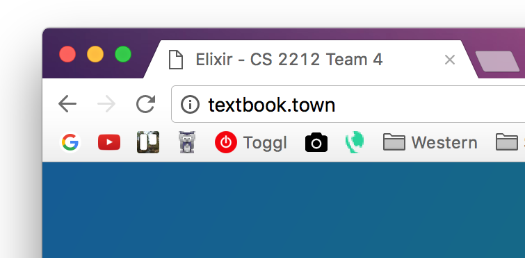
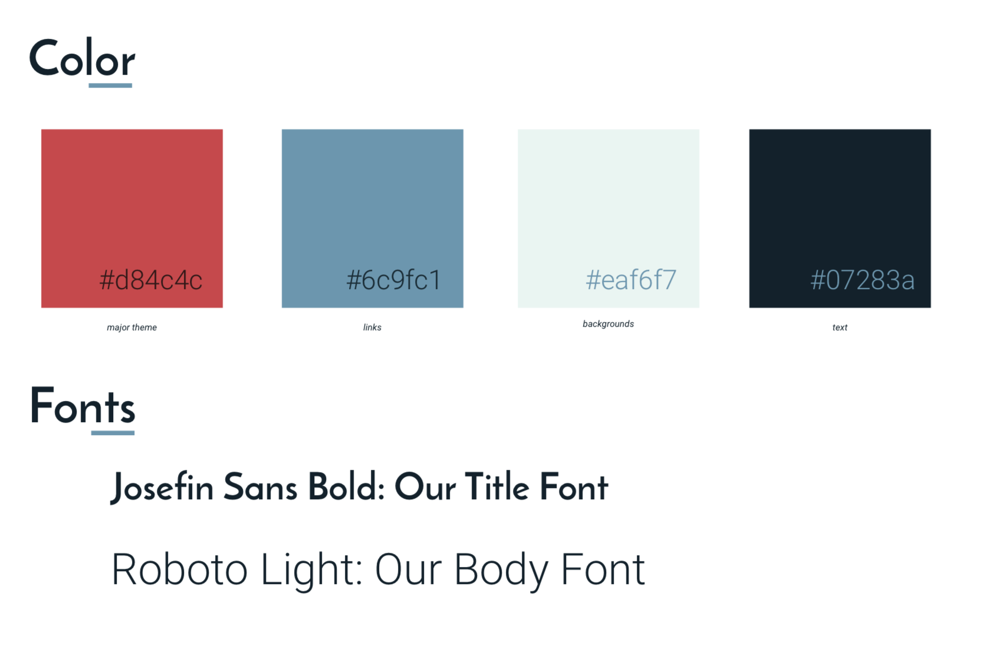

Project Elixir will follow the flat and minimal design principles but with the added twist of light layering and depth elements. The flat trend hit its trough in about 2015 and since flat color alone is seen as a bit boring unless very interesting twists are added in to it. For example check out Bloomberg who have reintroduced gradients as well as stand out website elements.
User will interact with this software on desktop or mobile web based platforms. The site is elegant in its simplicity which allows users to intuitively use our product.
Our brand image is tied to books, and moving them in unique ways. This inspired the design of our logo. Our name is also inspired by the product we move. Since we serve as a place for textbooks to be bought and sold, and for people to come together, we arrived at Textbook Town as a product name. Harnessing the recent trend in unique domains, textbook.town was obtained as our domain name.
Our logo is inspired by the act our product performs, moving textbooks optimally. It is simple yet communicative, and can be expressed in any shade making it very flexible for use on websites, to T-Shirts!
Our title font includes interesting and trendy geometric elements, while our body font remains clean and reserved for clarity. Our colors convey trust but life, blues are typically corporate colors which are associated with stability and fortitude. Blue will give our users the confidence in our system. Red is a lively twist to the blue theme which conveys energy to our users, who are largely university aged students.
Here is a look at a concept drawing of our search results page, which will be at the core of our product. Textbooks are easily browsed, and clicked for more information.

Users will arrive on our home page where they will learn about the experience of using our product. There will be a call to action to buy as well as one to sell. Sample search results are displayed here but will connect the user to the live search list if engaged with.

Users will be allowed to search through the textbook listing, and begin to enter a bid, but will be prompted to register or log in prior to any of these actions completing. The menu allows users to search for books, or sell a book of their own.
The individual book interface will fade in over the search results background, giving the users a clear understand of where they are on the site still.
A similar modal will be employed for adding a book you are selling to the directory, users will have the modal fade in over the search page and accept its input.
The owner of the textbook will get an expanded view of the textbook page that shows the number of bids and current sale price, which have been placed. When the bidding has concluded, the seller will see a list of the 3 top bidders and the price they are expected to pay including: 1. Each user's name 2. Each user's Facebook profile to contact by messenger. The seller can also delete the textbook ad from this page.